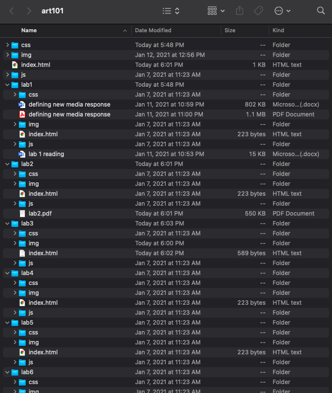

This lab consisted of making a local file system and further making index.html files for our structure and lab 3.
This lab was partially challenging and confusing, yet we quickly figured out that we already had the file structure preset in our Art101 folder with all the necessary websites attached.
This website is the result (of our hard labour)!
